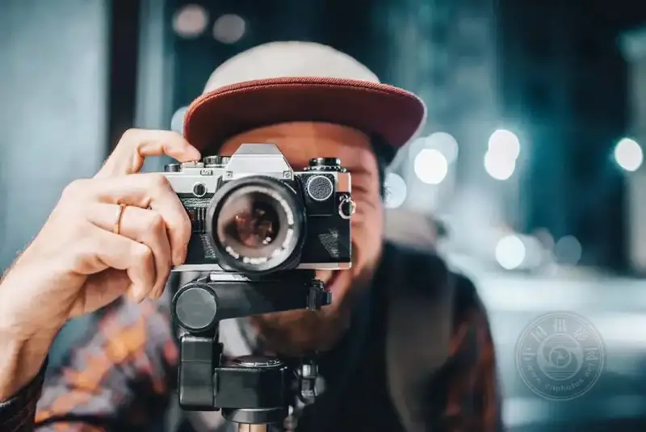
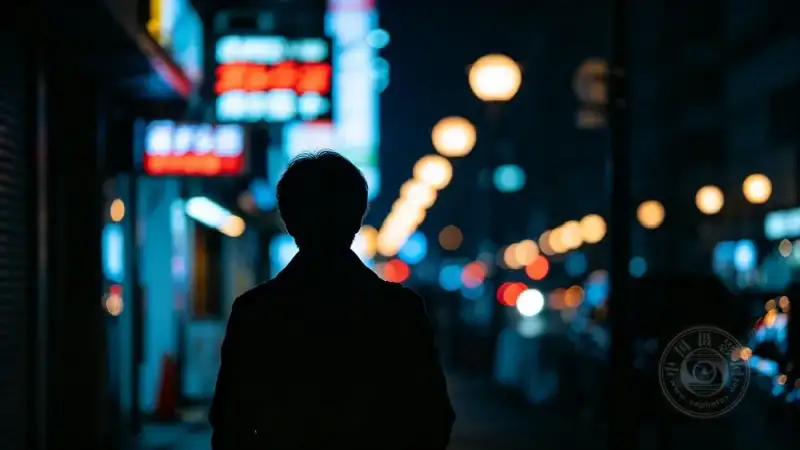
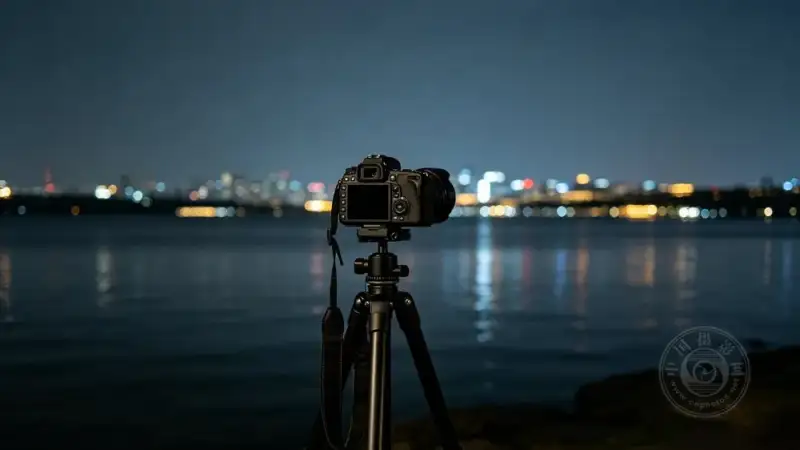
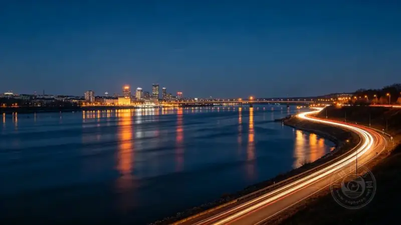
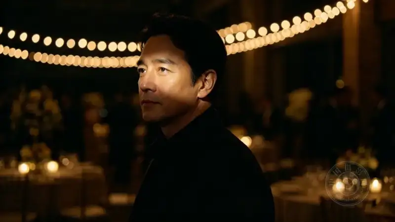
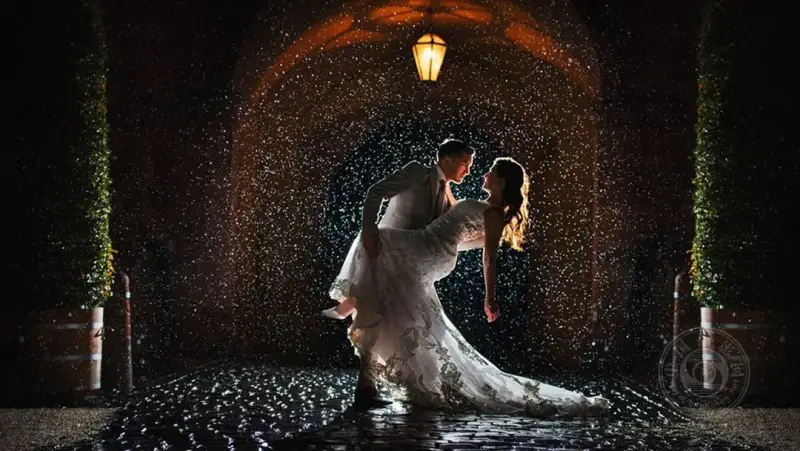
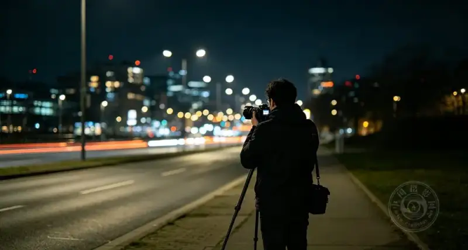

Night photography is one of the hardest challenges in photography. It demands more from your gear than the daytime. It also tests your stamina and patience. You hold the device for long periods and adjust the settings again and again. One slip and you make a mistake. Some mistakes can ruin a photo that should have been great.
Today we will list the most common5 mistakeswhen you shoot events at night. They help you avoid pitfalls and shoot moody photos with ease.

Mistake 1: Relying on automatic mode
When you shoot a night event, the first thing to do isturn off automatic mode..
In low light, automatic mode easily makes the photo lookgray and flat,with no layers. No matter how fancy the lights are, it will not help.
The right way is to switch tomanual mode (M),and control these three key settings:
■ Aperture (f-number): Open the aperture as wide as you can (such as f/2.8 or wider) to let more light in. A wide aperture also gives a pleasing shallow depth of field, with a soft blurred background. It is especially good for portraits. If you are not sure about the aperture for fireworks, a wedding, or a concert, do some homework first.
■ Shutter speed: The slower the shutter, the more light comes in, but the easier it is to blur from motion. If people move a lot, raise the shutter speed until the frame is sharp again.
■ ISORaising the ISO makes the frame brighter, but the cost is thatnoise (grain) also grows. Without noise-reduction software in post, too high an ISO greatly reduces image quality.

Mistake 2: Not using a tripod
In night shooting,a tripod is not an option. It is a must..
It is the most effective tool to steady the camera and avoid blur. This is especially true outdoors in low light, where the lights are sparse and even the eye cannot focus quickly, let alone a hand-held camera.
A tripod also lets you take your time withlong exposures., You donot need to hold the camera up. You can catch richer light and shoot brighter photos with more detail.

Mistake 3: Moving the camera during a long exposure
During a long exposure, the shutter stays open for several seconds or more. In that time,any tiny movementwill blur the frame. This is why photographers rely so much on a tripod.
If you have no tripod but must shoot, thentry to keep your body and the camera perfectly still..If you must move at an event such as a wedding or a concert, find your spot first and stand steady before you press the shutter. After each long exposure, wait until the people or objects around you are still before you take the next one.

Mistake 4: Only shooting wide scenes
When you shoot a night event, it is easy to be drawn to the cool lights and composition. But do not forget:the main subject of an event is people..
Why not try some portraits? A smallexternal flashas fill light makes the skin look natural and the eyes come alive in low light.
At the same time, an event is usually full of details: the fine setup of the venue, the moody decor, and even reflections in a corner. These are all worth recording.
One more tip:Through the whole event, shoot at times and record from many angles.Do not let any moving moment slip away.

Mistake 5: Overusing the flash
A flash fills light, but it also easilybecomes too harsh and ruins the mood., It can even cause red-eye and disturb others. It is also not good for moving objects, because a flash freezes the frame stiffly and lacks motion.
This is why pro sports photographers prefer to use afast shutterto freeze motion rather than rely on a flash.
If you must use the built-in flash in low light, considerturning off autofocus and auto exposure., Set the settings by hand to find the best balance. This gives you good photos without disturbing the mood.

Once you master these five points, you will take fewer wrong turns and shoot more good photos at night events.
For beginners, these look basic, but they are the easiest to forget when the scene is busy and tense.

Recite them before you shoot, and stay alert while you shoot.Then your night photos can tell a story, feel warm, and move people.